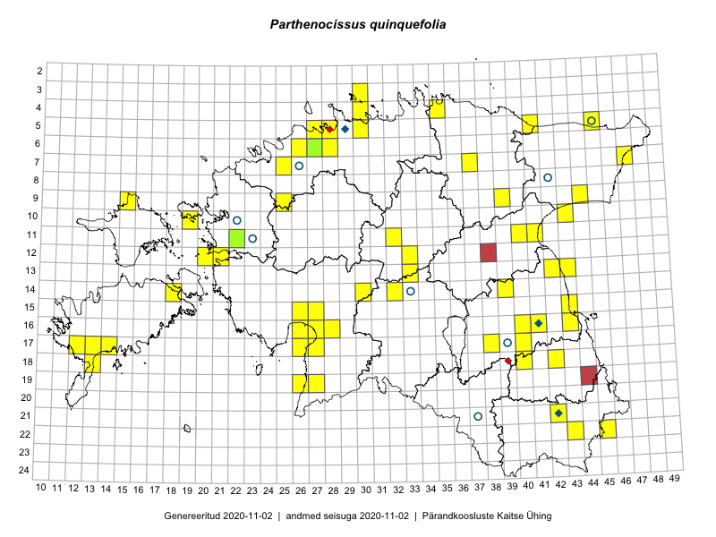

Parthenocissus quinquefolia
Uuendatud: 2016-12-01
Kaardile koondatud taksonid: Parthenocissus quinquefolia (L.) Planch.

Kaart põhineb 47 kirjel.
Kuvatud viited 20 esimesele andmebaasikirjele, ülejäänud PlutoFis
- Ott Luuk: 2014-07-25: 12-20: GPS punkt
- Peedu Saar, Eerik Leibak: 2015-07-30: 16-41: GPS punkt
- Tiit Hallikma, Toomas Kukk: 2015-07-21: 05-45: GPS punkt
- Peedu Saar: 2015-08-22: 11-41: GPS punkt
- Toomas Kukk: 2014-07-12: 09-44: ala
- Thea Kull, Eerik Leibak: 2015-07-21: 07-47: GPS punkt
- Thea Kull, Meeli Mesipuu: 2015-08-14: 13-42: GPS punkt
- Thea Kull, Meeli Mesipuu: 2015-08-14: 13-43: GPS punkt
- Meeli Mesipuu, Timo Luhamäe: 2015-07-24: 05-41: ala
- Indrek Tammekänd: 2015-05-16: 19-27: GPS punkt
- Indrek Tammekänd: 2015-05-12: 15-26: GPS punkt
- Meeli Mesipuu: 2015-06-27: 16-26: GPS punkt
- Timo Luhamäe, Meeli Mesipuu: 2015-06-11: 12-33: GPS punkt
- Karin Kikas, Elle Rajandu: 2015-06-02: 07-37: GPS punkt
- Meeli Mesipuu, Timo Luhamäe: 2015-06-11: 12-33: ala
- Meeli Mesipuu, Thea Kull: 2014-08-14: 13-43: ala
- Meeli Mesipuu, Thea Kull: 2015-08-14: 13-42: ala
- Karin Kikas, Elle Rajandu: 2015-07-22: 17-14: GPS punkt
- Ott Luuk, Toivo Sepp: 2015-08-18: 11-32: GPS punkt
- Indrek Tammekänd: 2016-06-01: 16-27: GPS punkt